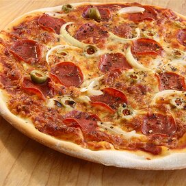

Ingredients:
- 1 teaspoon active dry yeast
- ¼ teaspoon white sugar
- ¾ cup lukewarm water
- 2 cups all-purpose flour, divided
- ½ teaspoon salt
Steps
- Dissolve yeast and sugar in hot water in a bowl. Let stand until yeast forms a creamy foam, 5 to 8 minutes.
- Mix 1 3/4 cup flour and salt in a large bowl. Pour in yeast mixture; mix well until dough comes together.
- Transfer dough to a floured surface and knead until smooth, adding remaining 1/4 cup flour if dough is too sticky, about 2 minutes. Roll dough into a 12-inch circle. Transfer to a greased pizza pan.